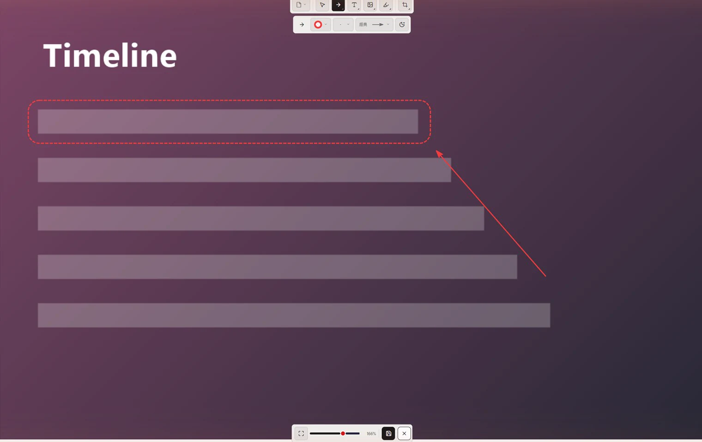
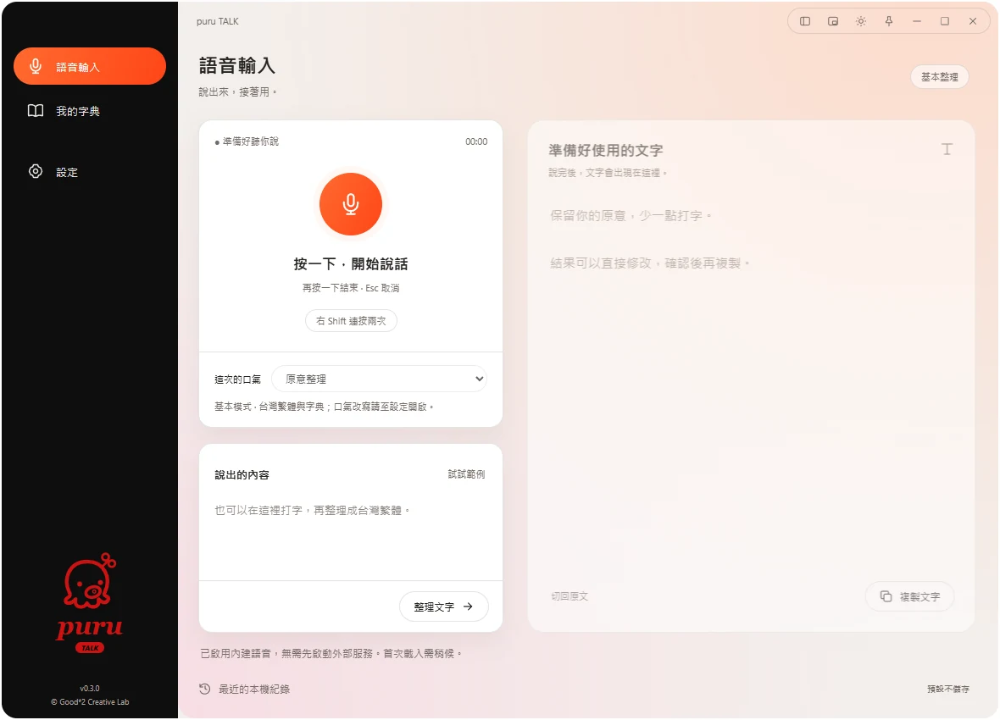
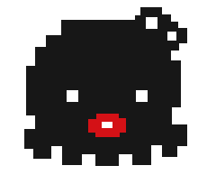

Less friction.
More flow.
把複雜留給 puru，把輕鬆留給自己。
Small desktop tools.
A little more room to think.
為日常工作，做一點減法。01 — 04
A little silly. A lot of clever.
DESKTOP TOOLS. WITH CHARACTER.擷取 CUT表達 TALK整理 SORT追蹤 TRACKLESS FRICTION. MORE FLOW.
Four simple verbs.
A lighter workday.
從擷取、表達，到整理、追蹤。各自使用，把力氣留給真正想做的事。
SORT 與 TRACK 為系列規劃；點選工具查看方向。
CUT
看到好東西，
不只存起來。
一張畫面，說清楚當下。
一點素材，留下以後的可能。
從擷取與溝通開始，探索讓零散素材慢慢長成概念的方式。少一點搬運，多一點自己的想法。

一張畫面，重點更清楚。
用框線與箭頭指出要討論的位置，讓對方看見你在意的事。
看素材累積示範 →
文字整理示範
「嗯，那個會議改明天下午三點，然後記得帶設計稿。」
先留下原本的想法。
預寫情境示範 · 不使用麥克風或 AITALK
Say it your way.
想法先說出來，文字慢慢理清楚。
讓日常溝通，少一點卡住的時刻。
將口頭想法轉為適合溝通的文字，是 TALK 的核心方向。
讓習慣長成知識
日常順手留下的截圖、錄影，慢慢長成一則筆記。
點選下面的素材，看它如何累積。這是網站的情境演示，呈現我們正在探索的方向。
0 / 3
先留下一點素材。
從日常順手的截圖、錄影開始，不必先整理。
Install it,
or just unzip.
兩種拿法，裝的是同一個程式。想長期使用，選安裝版；想先試試看、或隨身帶著走，選免安裝版。
- 目前版本
- CUT · TALK
試用版（Pre-release），功能與畫面可能持續調整。 - 安裝版
- 執行安裝程式即可。安裝後，可在程式內更新。
- 免安裝版
- 解壓縮後直接執行，不需安裝。
- 作業系統
- Windows 11 64 位元（x64）：已測試。
Windows 10：尚未測試。
macOS、Linux：尚未提供。 - 最低規格
- 仍在測試中，確定後公布在這裡。
- 安全性提示
- 程式目前尚未簽章，Windows 可能出現「未知的發行者」或 SmartScreen 提示。請只從本頁的按鈕下載。
Less managing.
More doing.
More doing.
工作已經夠多了。
工具，就簡單一點。
puru 從日常工作裡的小麻煩開始。畫面怎麼說清楚、想法怎麼留下來、東西怎麼找得到、進度怎麼看得懂。
我們相信，好工具可以安靜地幫上忙。多留一點時間，給創作、給生活，也給什麼都不做的片刻。
A little good, every day. ■